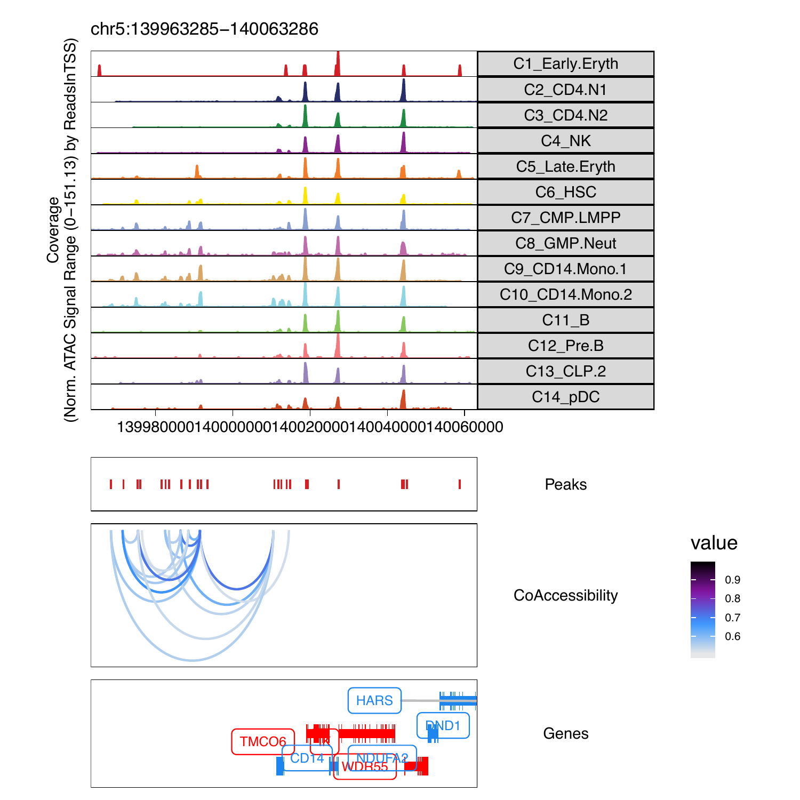

15.1 CoAccessibility with ArchR
cA <- getCoAccessibility(
ArchRProj = projHeme5,
corCutOff = 0.5,
resolution = 1,
returnLoops = FALSE
)
cA
# DataFrame with 65736 rows and 4 columns
# queryHits subjectHits seqnames correlation
# <integer> <integer> <Rle> <numeric>
# 1 8 13 chr1 0.69736362363962
# 2 13 8 chr1 0.69736362363962
# 3 52 64 chr1 0.502479053390956
# 4 54 55 chr1 0.573405135422231
# 5 55 54 chr1 0.573405135422231
# ... ... ... ... ...
# 65732 158297 158296 chrX 0.5541398895206
# 65733 158332 158333 chrX 0.504941172383233
# 65734 158333 158332 chrX 0.504941172383233
# 65735 158339 158340 chrX 0.506143160385986
# 65736 158340 158339 chrX 0.506143160385985
metadata(cA)[[1]]
# GRanges object with 158378 ranges and 0 metadata columns:
# seqnames ranges strand
# <Rle> <IRanges> <Rle>
# Cluster10 chr1 752327-752827 *
# Cluster9 chr1 760866-761366 *
# Cluster2 chr1 762700-763200 *
# Cluster2 chr1 779639-780139 *
# Cluster8 chr1 793519-794019 *
# ... ... ... ...
# Cluster5 chrX 154841853-154842353 *
# Cluster12 chrX 154842354-154842854 *
# Cluster4 chrX 154862032-154862532 *
# Cluster5 chrX 154912371-154912871 *
# Cluster6 chrX 154996898-154997398 *
cA <- getCoAccessibility(
ArchRProj = projHeme5,
corCutOff = 0.5,
resolution = 1,
returnLoops = TRUE
)
# GenomicRangesList of length 1
# names(1): CoAccessibility
cA[[1]]
# GRanges object with 32868 ranges and 1 metadata column:
# seqnames ranges strand | value
# <Rle> <IRanges> <Rle> | <numeric>
# [1] chr1 845640-856561 * | 0.69736362363962
# [2] chr1 968601-1004143 * | 0.502479053390956
# [3] chr1 974287-975100 * | 0.573405135422231
# [4] chr1 1034332-1034887 * | 0.807870076075987
# [5] chr1 1072846-1079621 * | 0.591975205782561
# ... ... ... ... . ...
# [32864] chrX 153597267-153637554 * | 0.501648373320333
# [32865] chrX 153637554-153659408 * | 0.534554389595235
# [32866] chrX 153659408-153659914 * | 0.5541398895206
# [32867] chrX 153959662-153960350 * | 0.504941172383233
# [32868] chrX 153980214-153990355 * | 0.506143160385986cA <- getCoAccessibility(
ArchRProj = projHeme5,
corCutOff = 0.5,
resolution = 1000,
returnLoops = TRUE
)
cA[[1]]
# GRanges object with 30315 ranges and 1 metadata column:
# seqnames ranges strand | value
# <Rle> <IRanges> <Rle> | <numeric>
# [1] chr1 845500-856500 * | 0.69736362363962
# [2] chr1 968500-1004500 * | 0.502479053390956
# [3] chr1 974500-975500 * | 0.573405135422231
# [4] chr1 1072500-1079500 * | 0.591975205782561
# [5] chr1 1072500-1109500 * | 0.509755959269061
# ... ... ... ... . ...
# [30311] chrX 153596500-153597500 * | 0.526200963980073
# [30312] chrX 153597500-153637500 * | 0.501648373320333
# [30313] chrX 153637500-153659500 * | 0.534554389595235
# [30314] chrX 153959500-153960500 * | 0.504941172383233
# [30315] chrX 153980500-153990500 * | 0.506143160385986
# -------
# seqinfo: 23 sequences from an unspecified genome; no seqlengthscA <- getCoAccessibility(
ArchRProj = projHeme5,
corCutOff = 0.5,
resolution = 10000,
returnLoops = TRUE
)
cA[[1]]
# GRanges object with 15990 ranges and 1 metadata column:
# seqnames ranges strand | value
# <Rle> <IRanges> <Rle> | <numeric>
# [1] chr1 845000-855000 * | 0.69736362363962
# [2] chr1 965000-1005000 * | 0.502479053390956
# [3] chr1 1075000-1085000 * | 0.542909007799088
# [4] chr1 1075000-1105000 * | 0.522706329518404
# [5] chr1 1105000-1115000 * | 0.607428937524039
# ... ... ... ... . ...
# [15986] chrX 153305000-153345000 * | 0.63313940661629
# [15987] chrX 153595000-153635000 * | 0.501648373320333
# [15988] chrX 153635000-153655000 * | 0.534554389595235
# [15989] chrX 153955000-153965000 * | 0.504941172383233
# [15990] chrX 153985000-153995000 * | 0.506143160385986
# -------
# seqinfo: 23 sequences from an unspecified genome; no seqlengthsPlotting browser tracks with CoAccessibility
markerGenes <- c(
"CD34", #Early Progenitor
"GATA1", #Erythroid
"PAX5", "MS4A1", #B-Cell Trajectory
"CD14", #Monocytes
"CD3D", "CD8A", "TBX21", "IL7R" #TCells
)
p <- ArchRBrowserTrack(
ArchRProj = projHeme5,
groupBy = "Clusters2",
geneSymbol = markerGenes,
upstream = 50000,
downstream = 50000
)To plot a track we can simply print one from the list
